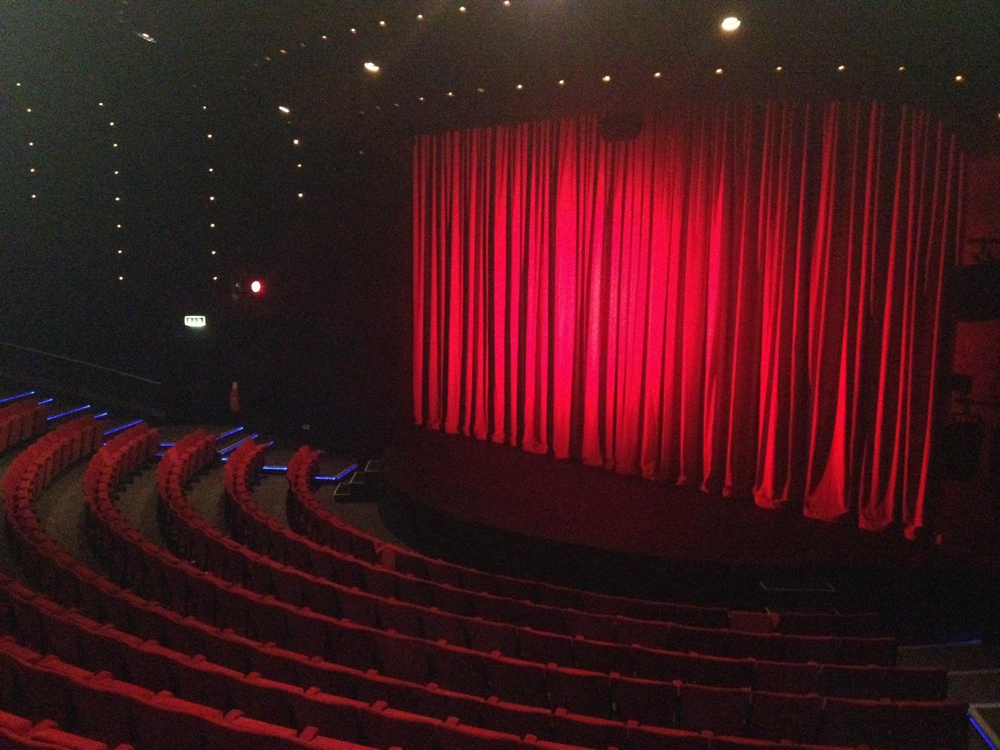

Select a Music Track:
Jazz
Pop
Musical
Select Seat Position:
Seat Position 1
Seat Position 2
Seat Position 3
Seat Position 4
Seat Position 5
Seat Position 6
Seat Position 7
Seat Position 8
Seat Position 9
Seat Position 10
Play Selected Track
Stop
